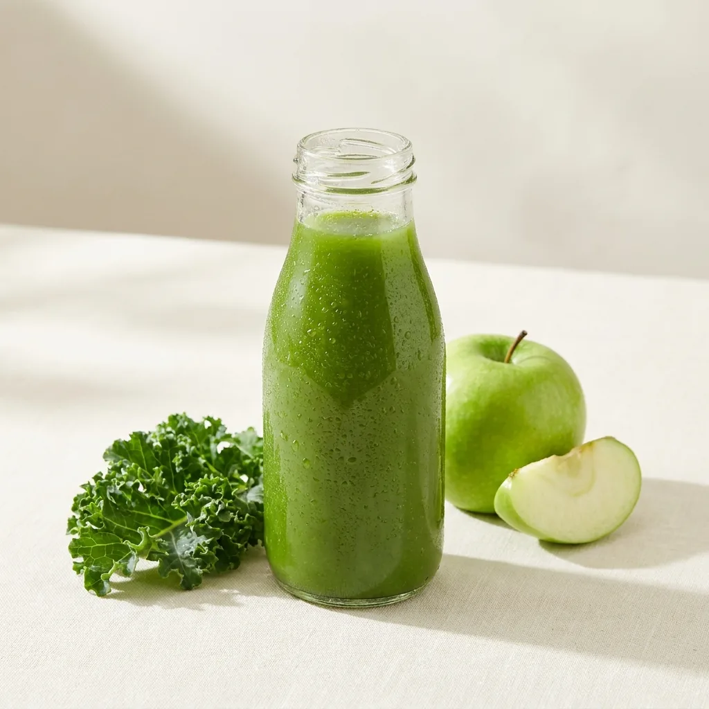
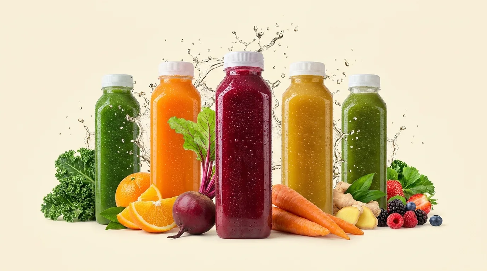
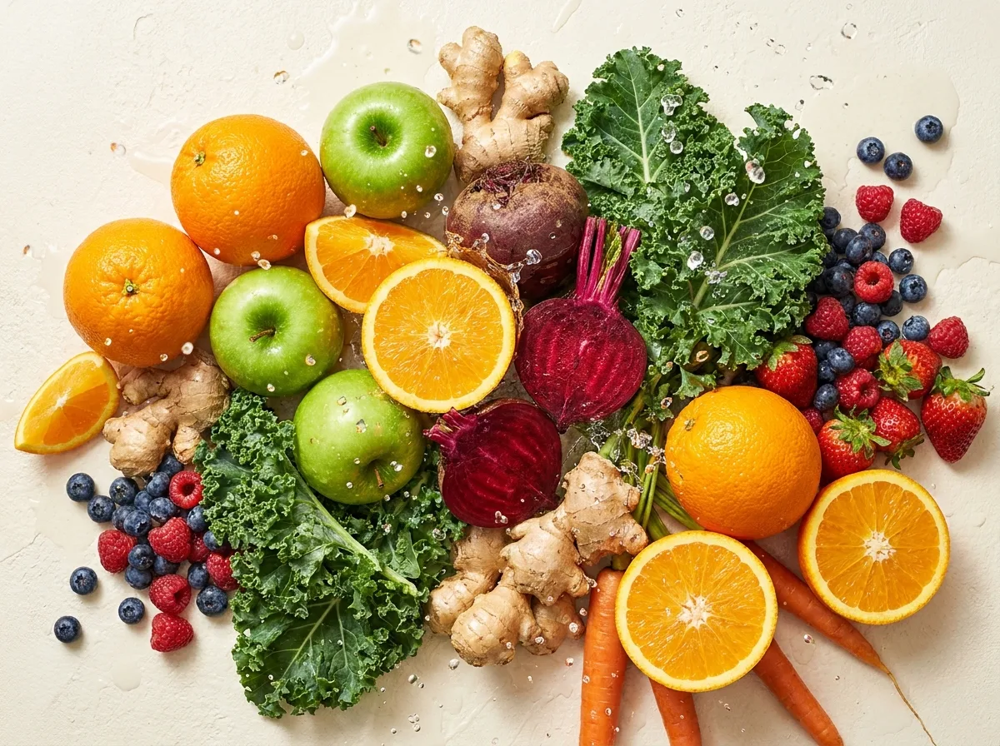
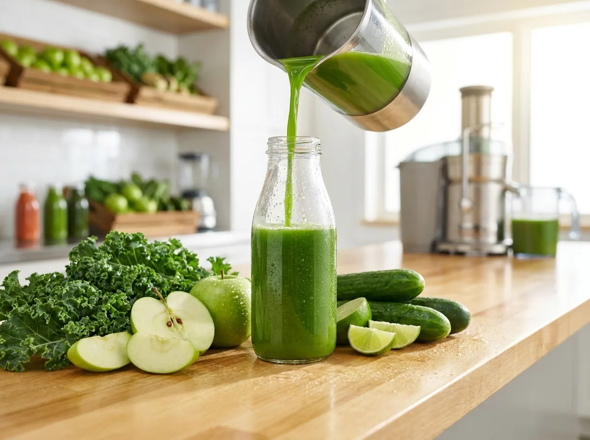
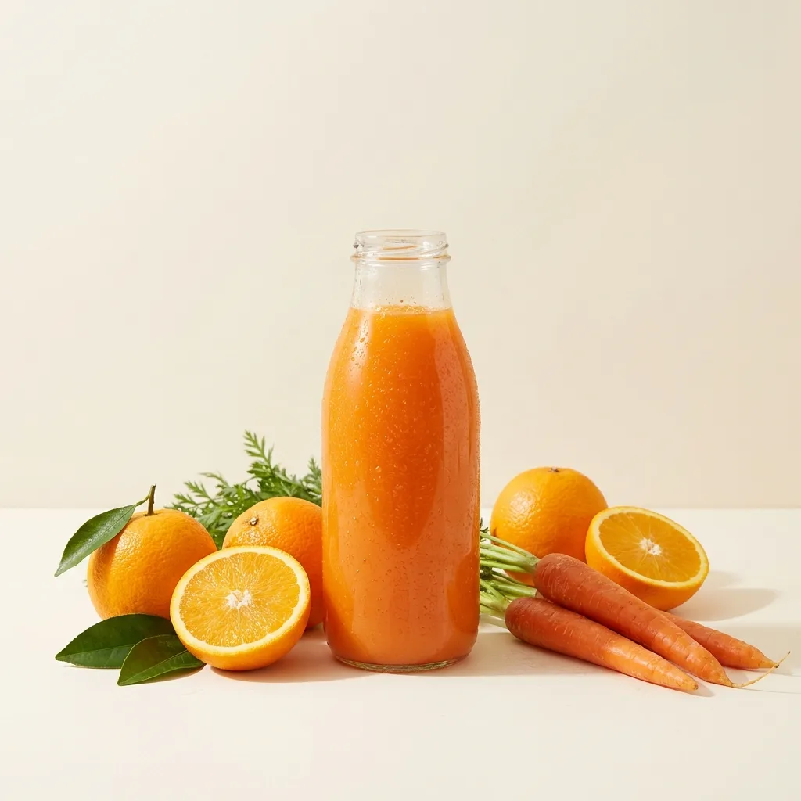
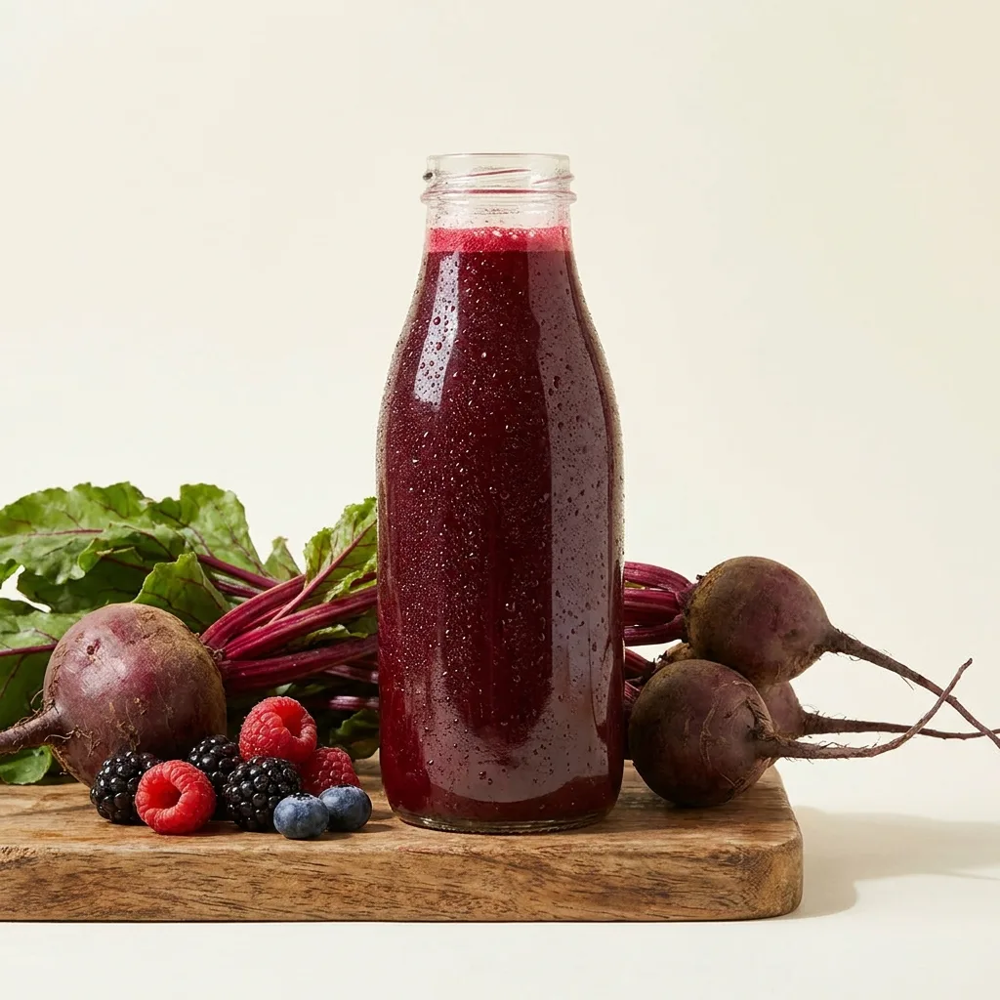

熱銷綠盈・羽衣甘藍蘋果
羽衣甘藍、青蘋果、小黃瓜、檸檬，清爽不苦，喚醒一天。
- 低糖・高纖維
- 晨間排空首選
NT$150
1

三餐老是外食，一天五份蔬果根本達不到。
市售果汁不是加糖就是濃縮還原，喝了沒負擔感反而更重。
想自己打果汁，買菜、清洗、洗果汁機……累到放棄。

不產熱、不氧化，最大保留蔬果的酵素與營養。
清晨現榨、當日出貨，喝得到剛榨好的鮮甜。
100% 蔬果，無糖、無濃縮還原、無香料色素。
保冷袋加冰寶，到府仍冰涼新鮮不斷鏈。

每一瓶 300ml，都是用紮實的當令蔬果低溫慢壓而成。我們不稀釋、不加水，只把最單純的鮮榨交到你手上。
「綠盈喝起來超清爽不苦，當早餐喝一週腸胃輕鬆很多。」
「橙活酸甜剛好，小孩超愛，終於有不加糖又好喝的果汁。」
「紅萃顏色美味道濃，運動後一瓶超滿足，冷鏈宅配到貨很冰。」
「品質很穩定，訂閱很方便。希望多出一些季節限定口味。」
單瓶 300ml。單筆滿 NT$600 免運，可調整數量、加入購物車一次結帳。

熱銷羽衣甘藍、青蘋果、小黃瓜、檸檬，清爽不苦，喚醒一天。

香橙、紅蘿蔔、鳳梨、薑，酸甜順口，補滿維生素 C。

甜菜根、綜合莓果、蘋果，濃郁飽滿，運動後的補給。
綠盈／橙活／紅萃各兩瓶，一次補滿一週的蔬果鮮榨。
無添加防腐劑，冷藏建議 3 天內飲用完畢，開封後請當天喝完，風味與營養最佳。
全系列無加糖、無濃縮還原、無香料，100% 當日現榨蔬果，喝得到食材原味。
全程低溫冷藏宅配，當日或隔日新鮮直送，使用保冷袋與冰寶確保到府仍冰涼。
提供每週固定配送的訂閱方案，可自由搭配口味、隨時調整或暫停（此為示範說明）。
留下你的需求，我們會盡快回覆。此表單為設計示範，不會真的送出或留存資料。